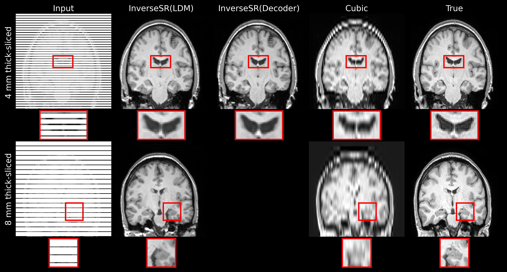

01 · RECONSTRUCT THE UNSEEN
Recovering anatomy from sparse MRI slices
A pre-trained 3D latent diffusion model became an anatomical prior, reconstructing high-fidelity brain volumes without paired low- and high-resolution training data.
WHAT BECAME VISIBLE
Crisper ventricular boundaries and fine hippocampal structure than cubic interpolation, including on an unseen dataset.